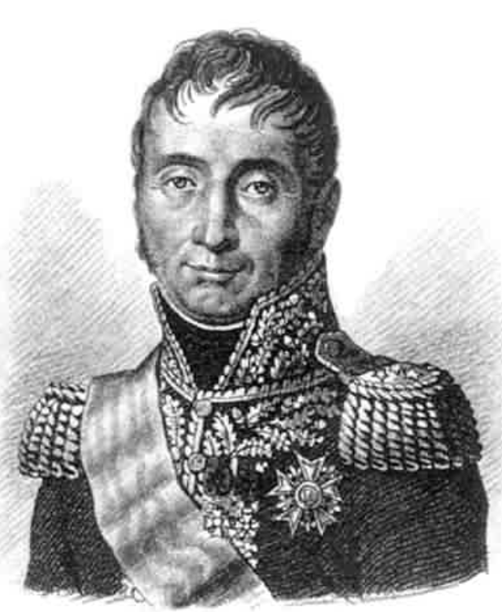
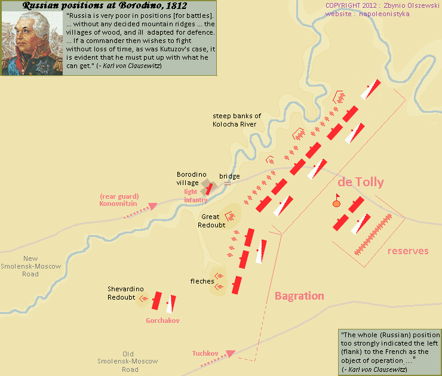
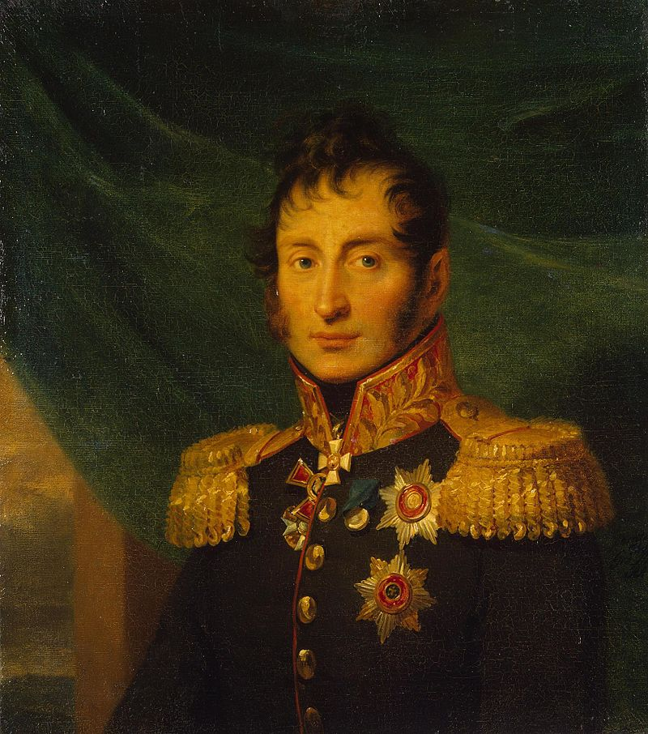
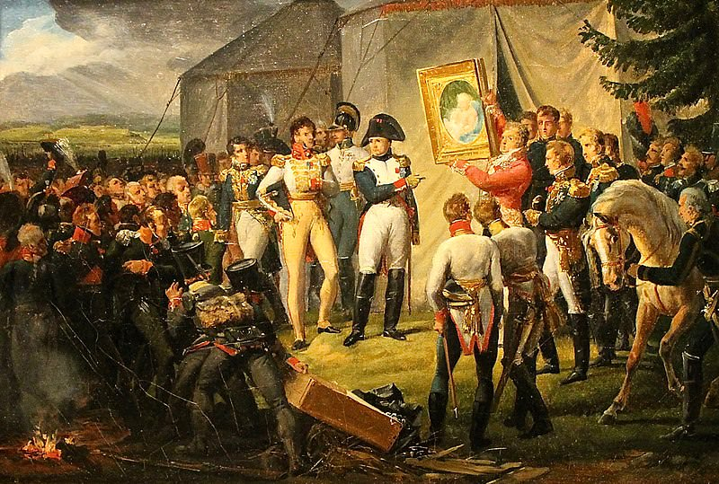
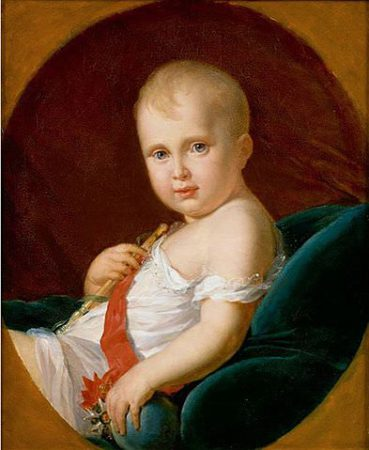
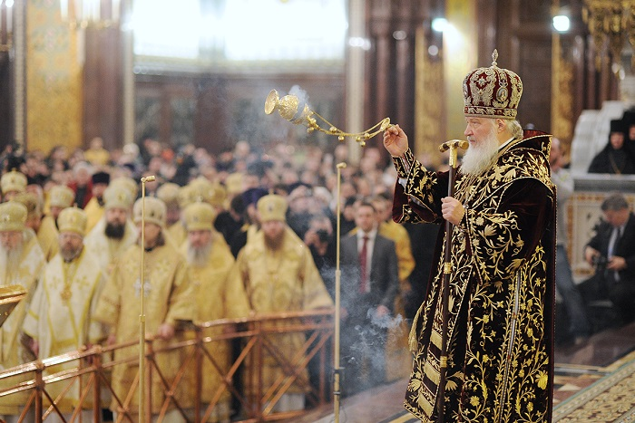

보로디노 전투 (3) - 쿠투조프는 대체 왜 그랬을까
게시: 2020-08-10T06:30:06+09:00
나폴레옹은 자신의 방식대로 러시아군 좌익을 공격하는데 있어서 걸리적 거리는 러시아군 진지였던 셰바르디노 보루를 먼저 걷어내기로 합니다. 보로디노 진지를 발견했던 9월 5일 바로 그날 저녁 5시, 거기까지 걸어오느리 지쳤을 다부의 군단에게 나폴레옹은 휴식이고 뭐고 없이 당장 공격을 지시했습니다. 콩팡(Compans) 장군의 사단이 그 작은 진지를 공격했는데, 여기는 워낙 작고 고립된 진지이다보니 쉽게 함락되었습니다.

(콩팡(Jean Dominique Compans) 장군입니다. 나폴레옹과 동갑이었던 그는 란, 그리고 나중에는 술트 밑에서 지휘관을 했고 마렝고와 아우스테를리츠 등에서 공훈을 세웠습니다. 1815년 나폴레옹의 백일천하 때는 나폴레옹 편에 붙었으나 현역 군 지휘관으로는 뛰지 않아 부르봉 왕가로부터 용서를 받았고, 대신 네 원수의 재판에서 사형 언도에 찬성표를 던지는 배신 행위를 했습니다.) 원래 쿠투조프의 생각대로라면 이 셰바르디노 보루는 그냥 관측소에 불과했기 때문에 러시아군은 이 보루를 그냥 그대로 포기해야 했습니다. 특히 이웃 진지와는 워낙 멀리 떨어진 곳이다보니 근접 지원도 용이하지 않았거든요. 그런데 러시아군도 프랑스군과 싸우려고 벼르고 벼르던 차였기 때문에, 이렇게 눈 앞에서 보루 하나가 함락되는 것을 보고 가만히 있기가 어려웠나 봅니다. 밀려났던 네베로프스키(Neverovsky) 장군의 제27 사단에 덧붙여 2개 사단이 더 동원되어 셰바르디노 보루를 탈환하겠다고 몰려 나왔습니다. 3대 1의 싸움이었으니 당연히 이번에는 콩팡 사단이 밀려났는데, 프랑스군으로서는 당연히 추가 사단들을 동원하여 재공격을 감행했습니다. 셰바르디노는 좁은 곳이라서 양측 6개 사단이 싸울 공간이 없었고, 결국 그 보루 인근 지역에서 의도치 않게 큰 회전이 벌어졌습니다. 밤 11시까지 지속된 이 전투의 최종 승자는 결국 프랑스군이었습니다. 러시아군은 이 전투에서 5천의 사상자와 5문의 대포, 그리고 무엇보다 셰바르디노 보루를 잃고 후퇴했는데, 프랑스군도 4천의 사상자와 8문의 대포를 잃었습니다. 당시 대포를 탈취하는 것은 그 무게로 인한 수송의 어려움 때문에라도 승전의 상징이었는데, 그 날 밤 쿠투조프는 프랑스군 대포를 8문이나 뺴앗는 첫 승리를 거두었다고 알렉산드르에게 호들갑을 떨며 자랑하는 편지를 썼습니다. 이 의도치 않았던 승전 아닌 승전은 러시아군에게 좋지 않은 영향을 주었습니다. 특히 가뜩이나 쿠투조프의 지휘 방식이 마음에 들지 않았던 고위 장성들 사이에서는 쿠투조프에 대한 불신이 마구 터져나왔습니다. 대체 이 많은 병력을 소모시킨 이유가 무엇인가, 저 셰바르디노 보루는 대체 왜 만든 것인가 등의 의문이었지요. 물론 대놓고 묻지 못했으니 대답도 없었습니다. 그런데 쿠투조프의 의도와는 전혀 무관하게, 셰바르디노 보루를 나폴레옹에게 내어준 것이 결국은 보로디노 전투에서 프랑스군에게 크게 불리한 영향을 주게 됩니다. 그 이야기는 나중에 보시겠습니다.

(셰바르디노 보루를 나폴레옹에게 내어준 것이 프랑스군에게 불리하게 작용하게 된 것은 이 그림과 상관있습니다. 이 그림의 제목은 '보로디노 고지에서의 나폴레옹'이지만, 저기서 나폴레옹이 앉아 있는 곳은 셰바르디노 보루입니다. 이 그림은 러시아 화가인 Vasily Vereshchagin이 1897년에 그린 것이니 실제 모습과는 많이 차이가 날 겁니다.) 다음 날인 9월 6일은 양측이 모두 진영을 가다듬고 전투를 준비하는 시간이었습니다. 그랑다르메 전원은 주린 배를 움켜잡고 행군하느라 지친 몸을 쉬는 동시에, 여태까지 주로 배낭 속에만 들어있었던 정복(full dress uniform)을 다음날 벌어질 피의 전투에서 입기 위해 정성껏 솔질하며 다듬었습니다. 베르티에의 부관 중 하나였던 레이몽(Raymond de Fezensac)이라는 장교는 이렇게 기록을 남겼습니다. "이렇게 대치한 양군이 서로를 죽이기 위해 준비를 갖추는 장관에는 슬프면서도 마음을 무겁게 하는 무언가가 있었다. 모든 연대들은 마치 휴일처럼 전원 정복을 착용하라는 명령을 받았다. 특히 황실 근위대는 전투 준비를 한다기 보다는 사열 행사를 준비하는 것 같았다. 고참 근위대의 병사들은 냉정하고 침착하게 준비하는 모습이 정말 인상적이었는데, 그들의 얼굴에는 열정도 걱정도 전혀 찾아볼 수 없었다." 러시아군도 그 다음 날이 여태까지 몇 달 동안 기다려오던 결전의 날이 되리라는 것을 잘 알고 있었습니다. 이 날은 쿠투조프가 정말 이례적으로 그답지 않게 무겁고 피곤한 몸을 이끌고 직접 진지를 돌아보고 프랑스군 진지를 정찰하며 하루를 보냈습니다. 그런데 놀라왔던 것은 그렇게 하루 종일 돌아보고 나서도 프랑스군이 러시아군 우익, 즉 스몰렌스크-모스크바 신작로의 북쪽에 펼쳐진 진지를 공격할 생각이 1도 없으며 공격은 주로 취약한 좌측에 집중될 것이라는 것이 쿠투조프의 눈에는 파악되지 않았다는 점입니다. 프랑스군이 전날 셰바르디노 보루를 점령하고 남서쪽에 우글거리는 것을 보면 누구의 눈에라도 그걸 생각할 수 있어야 할 것 같은데, 쿠투조프는 무슨 생각에서인지 러시아군의 현 배치를 전혀 바꾸지 않았습니다. 단지 좌익의 노출된 측면에 배치된 병력을 좀더 안쪽으로 끌어당겨 좌익 측면을 가리려 했습니다.

(지난 편에서 보신 그림입니다만 여기서 다시 한번 보시겠습니다. 보시다시피 바클레이(Barclay de Tolly)의 제1 군이 더 넓은 지역을 맡고 있는 것처럼 보이지만, 정작 중앙부인 라에프스키 보루, 즉 그림에서 'Great Redoubt'라고 표기된 보루는 바그라티온의 제2 군의 제7 사단이 맡고 있었습니다. 그러니 사실상 중앙부터 좌익 전체를 바그라티온이 맡아야 했습니다. 저 중앙 보루가 라에프스키 보루라고 불린 이유는 거기를 지키던 제7 사단의 지휘관이 라에프스키 장군이기 때문이었습니다.)
당시 러시아군 배치는 대략 이랬습니다. 우익에는 바클레이의 제1 군이 배치되어 있었는데 여기가 가장 병력도 든든하게 많았고 특히 플라토브의 카자흐 기병대와 우바로프(Fyodor Uvarov)의 강력한 정규 기병대가 배치되어 있었습니다. 정작 중앙과 좌익은 바그라티온의 제2 군이 지키고 있었는데, 아시다시피 원래부터 제2 군은 제1 군보다 병력이 더 작아서 2만5천 정도에 불과했습니다. 이 작은 병력이 중앙부터 좌익을 다 지키느라 분산되다 보니 취약하기가 이를데 없었습니다. 아마도 쿠투조프의 생각에 중앙은 고지가 있는데다 라예프스키 보루가 워낙 튼튼하여 안심이고, 좌익은 원래 전선 자체가 짧은데다가 개천과 습지가 얽혀 있으므로 프랑스군도 그 쪽으로 대군을 전개시키지는 못할 것이라고 생각했던 모양입니다. 글쎄요, 프랑스군이 군화가 젖을까봐 겁내는 군대는 아니었을텐데, 아무튼 그랬습니다. 상황이 이 정도라면 제2 군 지휘관 바그라티온이 항의를 할 만도 한데, 그는 원래부터 바클레이를 미워했고 쿠투조프를 경멸했기 때문인지 이런 배치에 대해 약한 소리를 하지 않았습니다.

(투치코프입니다. 그는 1799년 스위스에서의 제2차 취리히 전투에도 참전했습니다만, 그 이후 눈에 띄는 활약은 없었고 아우스테를리츠나 아일라우 등에도 참전하지 않았습니다. 그는 결국 보로디노에서 입은 중상 때문에 몇 주후 사망합니다.) 대신 쿠투조프도 이런 병력의 불균형을 맞춰주기 위해 투치코프(Nikolay Alexeivich Tuchkov)의 제3 군단을 좌익 후방에 배치하여 병력을 보강해주었습니다. 제3 군단은 병력이 16,500에 달했지만, 그 구성을 까보면 정규군은 8천에 불과했고 나머지는 7천의 농민병과 1천5백의 비정규 카자흐 기병들로 되어 있었습니다. 하지만 쿠투조프도 나름대로 생각이 있었습니다. 그는 이 빈약한 군단을 최후의 비밀 병기로 활용할 생각이었습니다. 그래서 그는 이 군단을 전면에 내세우지 않고 우티차(Utitsa) 마을 뒤편에 있는 숲 속에 숨겨 놓았습니다. 프랑스군이 취약한 러시아 좌익 측면으로 쇄도해 들어오는 최후의 순간에, 반대로 노출된 프랑스군의 측면에서 투치코프의 군단이 뛰쳐나와 기습을 한다는 나름대로 근사한 계획이었습니다. 그런데 쿠투조프의 좋게 말해 괴짜스럽고 나쁘게 말해 초딩스러운 지휘 방식은 여기서도 문제를 일으켰습니다. 전투 준비가 한창이던 9월 6일 오후 늦게, 경멸하던 쿠투조프와는 따로 전선을 시찰하던 실세 참모 베니히센의 눈에 이 투치코프의 군단이 띈 것입니다. 물론 베니히센은 쿠투조프로부터 이 군단의 배치 목적에 대해서는 아무런 설명을 듣지 못한 상태였습니다. 베니히센은 이렇게 큼직한 군단이 방어에 아무 도움도 안되는 구석진 곳에 처박혀 있는 것을 보고는 다시 한번 쿠투조프의 아마추어스러움에 탄식하며 이들을 개활지로 끌어내어 짧은 방어선을 좀더 연장하도록 했습니다. 이렇게 쿠투조프의 회심의 한방은 아무도 모르게 만들어졌다가 아무도 모르게 사라져 버렸습니다.
그 날 저녁, 나폴레옹은 마침 파리에서 온 전령이 가져온 자신의 아들 로마왕의 큼직한 초상화를 보고 매우 기뻐하며 병사들에게도 줄지어 지나가며 구경하게 했습니다. 그보다 더 늦은 밤, 쿠투조프는 스몰렌스크에서 피난온 성모 마리아와 아기 예수의 성상(icon)을 수레에 싣고 향을 태우는 러시아 정교 사제들과 함께 직접 각 연대를 돌아다니며 병사들에게 주님의 은총이 병사들과 함께 하기를 기도했습니다. 그 성상 행렬의 불빛과 기도 소리는 먼 프랑스 진영에서도 관측되었고, 나폴레옹은 그 소식을 듣고 '드디어 저 놈들이 도망치지 않고 싸울 모양이다' 라며 좋아했습니다.
그렇게 시간은 9월 7일, 운명의 날로 접어들었습니다.

(보로디노 전투 전날 밤, 파리에서 도착한 자기 아들 로마왕의 초상화를 병사들에게 보여주며 자랑하는 나폴레옹의 모습입니다. 오라스 베르네(Horace Vernet)의 그림입니다.)

(윗 그림 속의 실제 그림인 제라르(Gerard)가 그린 나폴레옹의 아들 로마왕의 초상화입니다. 러시아까지 갔다가 돌아온 그림이네요.)

(러시아 정교에서 향(incense)을 태우는 모습입니다. 저렇게 향로를 시계추처럼 크게 흔드는 모습이 인상적입니다.)
Source : 1812 Napoleon's Fatal March on Moscow by Adam Zamoyski
en.wikipedia.org/wiki/Estimates_of_opposing_forces_in_the_Battle_of_Borodino
napoleonistyka.atspace.com/Borodino_battle.htm
https://en.wikipedia.org/wiki/Nikolay_Tuchkov